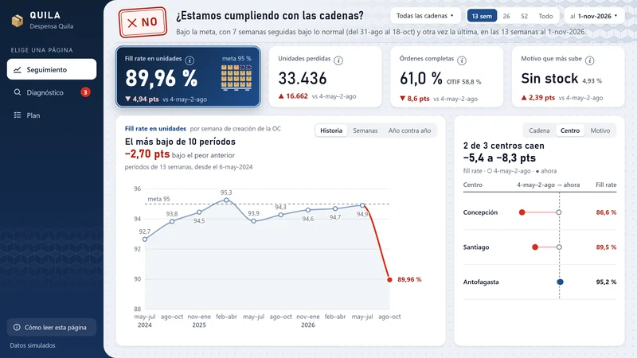

1Problema+2Datos+3Storytelling
Del problema a la decisión.Datos claros, bien contados.
Soy Diego Cayupil, analista de datos. Convierto datos en respuestas claras para que los equipos decidan mejor.
- Santiago, Chile
- Abierto a trabajo remoto
- Inglés y español
- SQL
- BigQuery
- Power BI
- Python
- Excel
- Tableau
- Snowflake
- dbt
- Git
- Claude
¿Por qué cayó el OTIF?
OTIF: pedidos que llegan a tiempo y completos · 3 bodegas
La bodega Norte explica el 70 % de la caída.
1Revisar su quiebre de stock esta semana
¿Dónde duele?Por ahí empiezo.
Cuatro dolores. Elige el tuyo.
Errores que nadie ve.
5 preguntas a los datos antes del primer gráfico
llave única · huérfanos · rangos · cuadraturaPruebo los datos antes de graficar.
Cada número, con su prueba.
14 gráficos y ninguna conclusión.
Dejo solo lo que responde la decisión.
La conclusión arriba y el paso siguiente.
El informe llega viejo.
Conecto las fuentes y automatizo la carga.
Esos 3 días ahora son para analizar.
Misma pregunta, tres respuestas.
Venta neta = facturado − notas de crédito
Con descripción, para personas e IADefino cada métrica una vez y pruebo la IA.
La IA da el número del dashboard.
Todo parte con definir.Lo demás es el resultado.
Las mismas seis fases hacen que la IA responda bien.
- DefinirLo principalProblem framing↗
- RevisarData quality↗
- ModelarData modelling↗
- AnalizarInsights↗
- ComunicarStorytelling + UX↗
- DocumentarDocumentation + IA↗
«Necesito un dashboard»no es un problema.
«Necesito un dashboard de despachos, con todo.»
«¿Qué bodega arreglo primero?»
No construyo sobre datosque no he probado.
«Los datos están bien, confía.»
2 definicionesde «a tiempo»: 94,1 % y 92,4 %. Manda la del cliente.
Un número,una sola versión.
94,1 · 96,0 · 92,4Tres cifras para el mismo OTIF
92,4 %Una medida. Todos leen lo mismo
No te muestro datos.Te digo qué hacer.
«El OTIF bajó 1,1 puntos.»
«La bodega Norte explica el 70 %. Revísala primero.»
Si hay que explicarlo,todavía no está listo.
8 páginas, 60 visuals, ninguna conclusión.
Una página. El título ya dice la conclusión.
Si no está escrito,no existe.
Un tablero listo que solo yo entiendo.
Cada métrica con su ficha, en Git y en el modelo.
Uso IA todos los días.Nunca a ciegas.
Así armo cada proyecto de Power BI.
Defino
¿Qué bodega arreglo primero?
La pregunta de negocio
Arma
OTIF % = DIVIDE(
[Pedidos OTIF],
[Pedidos] )El SQL en BigQuery y las medidas DAX
Compruebo
Cada número contra la fuente
Decido
Qué dice el dashboard
✕ Nunca permiso de escritura · datos personales en un chat · un número sin su fuente
Un caso completo.Nueve en camino.

El fill rate a las cadenas bajó de 95 % a 88 %. ¿Dónde se pierde?
De la primera reunión al plan: siete pasos, con el dashboard en vivo.
Las promociones del Cyber, ¿ganaron plata o solo movieron ventas de una semana a otra?Próximamente
Compran una vez y no vuelven. ¿Qué categorías traen clientes que sí vuelven?Próximamente
¿Qué problemaquieres resolver?
Cuéntamelo con tus palabras, aunque no sepas qué datos tienes. Te respondo en un día hábil.